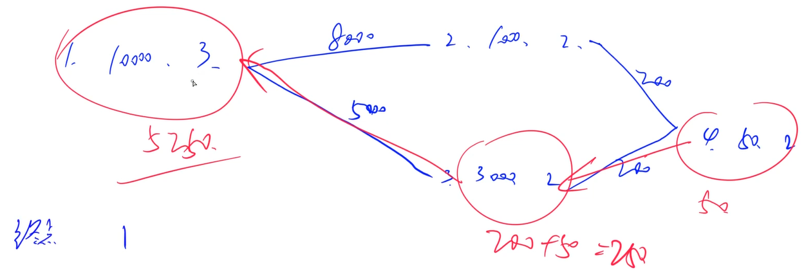
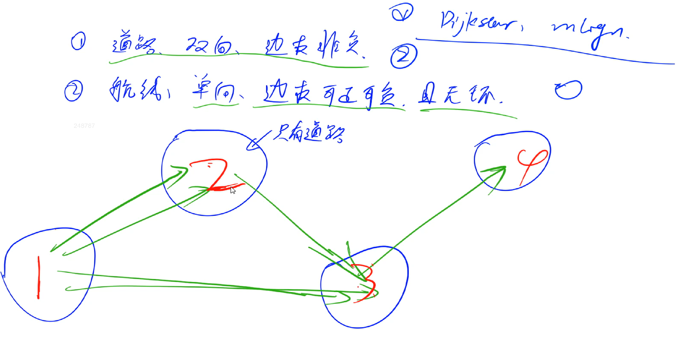
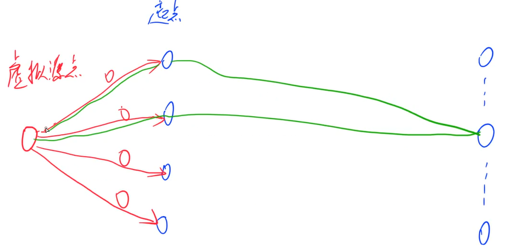

AcWing 1129. 热浪
https://www.acwing.com/problem/content/1131/
德克萨斯纯朴的民众们这个夏天正在遭受巨大的热浪！！！
他们的德克萨斯长角牛吃起来不错，可是它们并不是很擅长生产富含奶油的乳制品。
农夫John此时身先士卒地承担起向德克萨斯运送大量的营养冰凉的牛奶的重任，以减轻德克萨斯人忍受酷暑的痛苦。
John已经研究过可以把牛奶从威斯康星运送到德克萨斯州的路线。
这些路线包括起始点和终点一共有 T 个城镇，为了方便标号为 1 到 T。
除了起点和终点外的每个城镇都由 双向道路 连向至少两个其它的城镇。
每条道路有一个通过费用（包括油费，过路费等等）。
给定一个地图，包含 C 条直接连接 2 个城镇的道路。
每条道路由道路的起点 Rs，终点 Re 和花费 Ci 组成。
求从起始的城镇 Ts 到终点的城镇 Te 最小的总费用。
输入格式
第一行: 4 个由空格隔开的整数: T,C,Ts,Te;第 2 到第 C+1 行: 第 i+1 行描述第 i 条道路，包含 3 个由空格隔开的整数: Rs,Re,Ci。
输出格式
一个单独的整数表示从 Ts 到 Te 的最小总费用。
数据保证至少存在一条道路。
数据范围
1≤T≤2500, 1≤C≤6200, 1≤Ts,Te,Rs,Re≤T, 1≤Ci≤1000
输入样例：
17 11 5 422 4 231 4 347 2 253 4 365 7 577 3 386 1 196 3 4102 4 3115 6 3127 2 1
输出样例：
xxxxxxxxxx117
x1
3using namespace std;4typedef pair<int, int> PII;5const int N = 2e5;6int n, m, start, ed;7int dist[N], idx, ne[N], e[N], w[N], h[N];8bool st[N];9
10void add(int a, int b, int c) {11 e[idx] = b;12 w[idx] = c;13 ne[idx] = h[a];14 h[a] = idx++;15}16
17int dijkstra() {18 memset(dist, 0x3f, sizeof dist);19 dist[start] = 0;20 priority_queue<PII, vector<PII>, greater<PII>> heap;21 heap.push({0, start});22 while (heap.size()) {23 auto t = heap.top();24 heap.pop();25 int ver = t.second;26 if (st[ver]) continue;27 st[ver] = true;28 for (int i = h[ver]; ~i; i = ne[i]) {29 int j = e[i];30 if (dist[j] > dist[ver] + w[i]) {31 dist[j] = dist[ver] + w[i];32
33 heap.push({dist[j], j});34 }35 }36 }37 return dist[ed];38}39
40int main() {41 memset(h, -1, sizeof h);42 cin >> n >> m >> start >> ed;43 for (int i = 0; i < m; ++i) {44 int a, b, c;45 scanf("%d%d%d", &a, &b, &c);46 add(a, b, c);47 add(b, a, c);48 }49 cout << dijkstra() << endl;50 return 0;51}
AcWing 1128. 信使
https://www.acwing.com/problem/content/1130/
战争时期，前线有 n 个哨所，每个哨所可能会与其他若干个哨所之间有通信联系。
信使负责在哨所之间传递信息，当然，这是要花费一定时间的（以天为单位）。
指挥部设在第一个哨所。
当指挥部下达一个命令后，指挥部就派出若干个信使向与指挥部相连的哨所送信。
当一个哨所接到信后，这个哨所内的信使们也以同样的方式向其他哨所送信。信在一个哨所内停留的时间可以忽略不计。
直至所有 n 个哨所全部接到命令后，送信才算成功。
因为准备充足，每个哨所内都安排了足够的信使（如果一个哨所与其他 k 个哨所有通信联系的话，这个哨所内至少会配备 k 个信使）。
现在总指挥请你编一个程序，计算出完成整个送信过程最短需要多少时间。
输入格式
第 1 行有两个整数 n 和 m，中间用 1 个空格隔开，分别表示有 n 个哨所和 m 条通信线路。
第 2 至 m+1 行：每行三个整数 i、j、k，中间用 1 个空格隔开，表示第 i 个和第 j 个哨所之间存在 双向 通信线路，且这条线路要花费 k 天。
输出格式
一个整数，表示完成整个送信过程的最短时间。
如果不是所有的哨所都能收到信，就输出-1。
数据范围
1≤n≤100, 1≤m≤200, 1≤k≤1000
输入样例：
xxxxxxxxxx514 421 2 432 3 742 4 153 4 6
输出样例：
xxxxxxxxxx1111
xxxxxxxxxx551
3using namespace std;4typedef pair<int, int> PII;5const int N = 2e5;6int n, m;7int dist[N], idx, ne[N], e[N], w[N], h[N];8bool st[N];9
10void add(int a, int b, int c) {11 e[idx] = b;12 w[idx] = c;13 ne[idx] = h[a];14 h[a] = idx++;15}16
17int dijkstra() {18 memset(dist, 0x3f, sizeof dist);19 dist[1] = 0;20 priority_queue<PII, vector<PII>, greater<PII>> heap;21 heap.push({0, 1});22 while (heap.size()) {23 auto t = heap.top();24 heap.pop();25 int ver = t.second;26 if (st[ver]) continue;27 st[ver] = true;28 for (int i = h[ver]; ~i; i = ne[i]) {29 int j = e[i];30 if (dist[j] > dist[ver] + w[i]) {31 dist[j] = dist[ver] + w[i];32 heap.push({dist[j], j});33 }34 }35 }36 int res = 0;37 for (int i = 1; i <= n; ++i) {38 if (dist[i] == 0x3f3f3f3f) return -1;39 res = max(res, dist[i]);40 }41 return res;42}43
44int main() {45 memset(h, -1, sizeof h);46 cin >> n >> m;47 for (int i = 0; i < m; ++i) {48 int a, b, c;49 scanf("%d%d%d", &a, &b, &c);50 add(a, b, c);51 add(b, a, c);52 }53 cout << dijkstra() << endl;54 return 0;55}
AcWing 1127. 香甜的黄油
https://www.acwing.com/problem/content/1129/
农夫John发现了做出全威斯康辛州最甜的黄油的方法：糖。
把糖放在一片牧场上，他知道 N 只奶牛会过来舔它，这样就能做出能卖好价钱的超甜黄油。
当然，他将付出额外的费用在奶牛上。
农夫John很狡猾，就像以前的巴甫洛夫，他知道他可以训练这些奶牛，让它们在听到铃声时去一个特定的牧场。
他打算将糖放在那里然后下午发出铃声，以至他可以在晚上挤奶。
农夫John知道每只奶牛都在各自喜欢的牧场（一个牧场不一定只有一头牛）。
给出各头牛在的牧场和牧场间的路线，找出使所有牛到达的路程和最短的牧场（他将把糖放在那）。
数据保证至少存在一个牧场和所有牛所在的牧场连通。
输入格式
第一行: 三个数：奶牛数 N，牧场数 P，牧场间道路数 C。
第二行到第 N+1 行: 1 到 N 头奶牛所在的牧场号。
第 N+2 行到第 N+C+1 行：每行有三个数：相连的牧场A、B，两牧场间距 D，当然，连接是双向的。
输出格式
共一行，输出奶牛必须行走的最小的距离和。
数据范围
1≤N≤500, 2≤P≤800, 1≤C≤1450, 1≤D≤255
输入样例：
xxxxxxxxxx913 4 522334451 2 161 3 572 3 782 4 393 4 5
输出样例：
xxxxxxxxxx118
xxxxxxxxxx601
3using namespace std;4const int N = 3000;5int n, m, p, idx, ne[N], w[N], e[N], h[N];6int dist[N], id[N];7bool st[N];8
9void add(int a, int b, int c) {10 w[idx] = c;11 e[idx] = b;12 ne[idx] = h[a];13 h[a] = idx++;14}15
16int spfa(int x) {17 memset(dist, 0x3f, sizeof dist);18 dist[x] = 0;19 st[x] = true;20 queue<int> q;21 q.push(x);22 while (q.size()) {23 int t = q.front();24 q.pop();25 st[t] = false;26 for (int i = h[t]; ~i; i = ne[i]) {27 int j = e[i];28 if (dist[j] > dist[t] + w[i]) {29 dist[j] = dist[t] + w[i];30 if (!st[j]) {31 q.push(j);32 st[j] = true;33 }34 }35 }36 }37 int res = 0;38 for (int i = 0; i < n; ++i) {39 int j = id[i];40 if (dist[j] == 0x3f3f3f3f) return 0x3f3f3f3f;41 res += dist[j];42 }43 return res;44}45
46int main() {47 memset(h, -1, sizeof h);48 cin >> n >> p >> m;49 for (int i = 0; i < n; ++i) cin >> id[i];50 for (int i = 0; i < m; ++i) {51 int a, b, c;52 scanf("%d%d%d", &a, &b, &c);53 add(a, b, c);54 add(b, a, c);55 }56 int res = 2e9;57 for (int i = 1; i <= p; ++i) res = min(res, spfa(i));58 cout << res << endl;59 return 0;60}本题思路比较独特——可以枚举每一个牧场。
计算这个牧场到所有奶牛所在牧场的距离和，如果该牧场到达不了一个存在奶牛的牧场，则返回无穷。比较多个有效返回值的大小。
AcWing 1126. 最小花费
https://www.acwing.com/problem/content/1128/
在 n 个人中，某些人的银行账号之间可以互相转账。
这些人之间转账的手续费各不相同。
给定这些人之间转账时需要从转账金额里扣除百分之几的手续费，请问 A 最少需要多少钱使得转账后 B 收到 100 元。
输入格式
第一行输入两个正整数 n,m，分别表示总人数和可以互相转账的人的对数。
以下 m 行每行输入三个正整数 x,y,z，表示标号为 x 的人和标号为 y 的人之间互相转账需要扣除 z% 的手续费 ( z<100 )。
最后一行输入两个正整数 A,B。
数据保证 A 与 B 之间可以直接或间接地转账。
输出格式
输出 A 使得 B 到账 100 元最少需要的总费用。
精确到小数点后 8 位。
数据范围
1≤n≤2000, m≤105
输入样例：
xxxxxxxxxx513 321 2 132 3 241 3 351 3
输出样例：
xxxxxxxxxx11103.07153164
xxxxxxxxxx381
3using namespace std;4const int N = 2010;5
6int n, m, S, T;7double g[N][N];8double dist[N];9bool st[N];10
11void dijkstra() {12 dist[S] = 1;13 for (int i = 1; i <= n; i++) {14 int t = -1;15 for (int j = 1; j <= n; j++)16 if (!st[j] && (t == -1 || dist[t] < dist[j]))17 t = j;18 st[t] = true;19
20 for (int j = 1; j <= n; j++)21 dist[j] = max(dist[j], dist[t] * g[t][j]);22 }23}24
25int main() {26 scanf("%d%d", &n, &m);27
28 while (m--) {29 int a, b, c;30 scanf("%d%d%d", &a, &b, &c);31 double z = (100.0 - c) / 100;32 g[a][b] = g[b][a] = max(g[a][b], z);33 }34 cin >> S >> T;35 dijkstra();36 printf("%.8lf\n", 100 / dist[T]);37 return 0;38}g数组表示的是每次经过两个人，还能剩下多少钱的比例
dist数组表示的是保存的比例
AcWing 920. 最优乘车
https://www.acwing.com/problem/content/922/
H 城是一个旅游胜地，每年都有成千上万的人前来观光。为方便游客，巴士公司在各个旅游景点及宾馆，饭店等地都设置了巴士站并开通了一些单程巴士线路。
每条单程巴士线路从某个巴士站出发，依次途经若干个巴士站，最终到达终点巴士站。
一名旅客最近到 H 城旅游，他很想去 S 公园游玩，但如果从他所在的饭店没有一路巴士可以直接到达 S 公园，则他可能要先乘某一路巴士坐几站，再下来换乘同一站台的另一路巴士，这样换乘几次后到达 S 公园。
现在用整数 1,2,…N 给 H 城的所有的巴士站编号，约定这名旅客所在饭店的巴士站编号为 1，S 公园巴士站的编号为 N。
写一个程序，帮助这名旅客寻找一个最优乘车方案，使他在从饭店乘车到 S 公园的过程中换乘的次数最少。
输入格式
第一行有两个数字 M 和 N，表示开通了 M 条单程巴士线路，总共有 N 个车站。
从第二行到第 M+1 行依次给出了第 1 条到第 M 条巴士线路的信息，其中第 i+1 行给出的是第 i 条巴士线路的信息，从左至右按运行顺序依次给出了该线路上的所有站号，相邻两个站号之间用一个空格隔开。
输出格式
共一行，如果无法乘巴士从饭店到达 S 公园，则输出 NO，否则输出最少换乘次数，换乘次数为 0 表示不需换车即可到达。
数据范围
1≤M≤100, 2≤N≤500
输入样例：
xxxxxxxxxx413 726 734 7 3 642 1 3 5
输出样例：
xxxxxxxxxx112
xxxxxxxxxx461
3using namespace std;4const int N = 510;5int n, m;6bool g[N][N];7int dist[N];8int stop[N];9
10void bfs() {11 memset(dist, 0x3f, sizeof dist);12 queue<int> q;13 q.push(1);14 dist[1] = 0;15 while (q.size()) {16 int d = q.front();17 q.pop();18 for (int i = 1; i <= n; ++i) {19 if (g[d][i] && dist[i] > dist[d] + 1) {20 dist[i] = dist[d] + 1;21 q.push(i);22 }23 }24 }25}26
27int main() {28 cin >> m >> n;29 string line;30 getline(cin, line);31 while (m--) {32 getline(cin, line);33 stringstream ssin(line);34 int cnt = 0, p;35 while (ssin >> p) stop[cnt++] = p;36 for (int i = 0; i < cnt; ++i) {37 for (int j = i + 1; j < cnt; ++j) {38 g[stop[i]][stop[j]] = true;39 }40 }41 }42 bfs();43 if (dist[n] == 0x3f3f3f3f) puts("NO");44 else cout << max(0, dist[n] - 1) << endl;45 return 0;46}注意如何处理不知道每行不知道数量的输入！！！
使用getline之前记得要把上一行的回车读进去，不然会出现极其难 debug 的问题
利用了虚拟源点的思想：

注意这种建图的方式非常巧妙！需要好好体会！
AcWing 903. 昂贵的聘礼
https://www.acwing.com/problem/content/905/
年轻的探险家来到了一个印第安部落里。
在那里他和酋长的女儿相爱了，于是便向酋长去求亲。
酋长要他用 10000 个金币作为聘礼才答应把女儿嫁给他。
探险家拿不出这么多金币，便请求酋长降低要求。
酋长说：”嗯，如果你能够替我弄到大祭司的皮袄，我可以只要 8000 金币。如果你能够弄来他的水晶球，那么只要 5000 金币就行了。”
探险家就跑到大祭司那里，向他要求皮袄或水晶球，大祭司要他用金币来换，或者替他弄来其他的东西，他可以降低价格。
探险家于是又跑到其他地方，其他人也提出了类似的要求，或者直接用金币换，或者找到其他东西就可以降低价格。
不过探险家没必要用多样东西去换一样东西，因为不会得到更低的价格。
探险家现在很需要你的帮忙，让他用最少的金币娶到自己的心上人。
另外他要告诉你的是，在这个部落里，等级观念十分森严。
地位差距超过一定限制的两个人之间不会进行任何形式的直接接触，包括交易。
他是一个外来人，所以可以不受这些限制。
但是如果他和某个地位较低的人进行了交易，地位较高的的人不会再和他交易，他们认为这样等于是间接接触，反过来也一样。
因此你需要在考虑所有的情况以后给他提供一个最好的方案。
为了方便起见，我们把所有的物品从 1 开始进行编号，酋长的允诺也看作一个物品，并且编号总是 1。
每个物品都有对应的价格 P，主人的地位等级 L，以及一系列的替代品 Ti 和该替代品所对应的”优惠” Vi。
如果两人地位等级差距超过了 M，就不能”间接交易”。
你必须根据这些数据来计算出探险家最少需要多少金币才能娶到酋长的女儿。
输入格式
输入第一行是两个整数 M，N，依次表示地位等级差距限制和物品的总数。
接下来按照编号从小到大依次给出了 N 个物品的描述。
每个物品的描述开头是三个非负整数 P、L、X，依次表示该物品的价格、主人的地位等级和替代品总数。
接下来 X 行每行包括两个整数 T 和 V，分别表示替代品的编号和”优惠价格”。
输出格式
输出最少需要的金币数。
数据范围
1≤N≤100, 1≤P≤10000, 1≤L,M≤N, 0≤X<N
输入格式
xxxxxxxxxx911 4210000 3 232 800043 500051000 2 164 20073000 2 184 200950 2 0
输出格式
xxxxxxxxxx115250
xxxxxxxxxx491
3using namespace std;4const int N = 110;5int n, m;6int dist[N], level[N], w[N][N];7bool st[N];8
9int dijkstra(int down, int up) {10 memset(st, false, sizeof st);11 memset(dist, 0x3f, sizeof dist);12 dist[0] = 0;13 for (int i = 1; i <= n; ++i) {14 int t = -1;15 for (int j = 0; j <= n; ++j) {16 if (!st[j] && (t == -1 || dist[t] > dist[j]))17 t = j;18 }19
20 st[t] = true;21 for (int j = 1; j <= n; ++j) {22 if (level[j] >= down && level[j] <= up) {23 dist[j] = min(dist[j], dist[t] + w[t][j]);24 }25 }26 }27 return dist[1];28}29
30int main() {31 cin >> m >> n;32 memset(w, 0x3f, sizeof w);33 for (int i = 0; i <= n; ++i) w[i][i] = 0;34 for (int i = 1; i <= n; ++i) {35 int price, cnt;36 cin >> price >> level[i] >> cnt;37 w[0][i] = min(w[0][1], price);38 while (cnt--) {39 int id, cost;40 cin >> id >> cost;41 w[id][i] = min(w[id][i], cost);42 }43 }44 int res = 0x3f3f3f3f;45 for (int i = level[1] - m; i <= level[1]; ++i)46 res = min(res, dijkstra(i, i + m));47 cout << res << endl;48 return 0;49}难点还是在于建图的思路：

还是利用了虚拟源点的思路。这道题的虚拟源点是0。
注意仔细看输入数据的格式，想好该如何处理这种形式的输入数据。
AcWing 1135. 新年好
https://www.acwing.com/problem/content/1137/
重庆城里有 n 个车站，m 条 双向 公路连接其中的某些车站。
每两个车站最多用一条公路连接，从任何一个车站出发都可以经过一条或者多条公路到达其他车站，但不同的路径需要花费的时间可能不同。
在一条路径上花费的时间等于路径上所有公路需要的时间之和。
佳佳的家在车站 1，他有五个亲戚，分别住在车站 a,b,c,d,e。
过年了，他需要从自己的家出发，拜访每个亲戚（顺序任意），给他们送去节日的祝福。
怎样走，才需要最少的时间？
输入格式
第一行：包含两个整数 n,m，分别表示车站数目和公路数目。
第二行：包含五个整数 a,b,c,d,e，分别表示五个亲戚所在车站编号。
以下 m 行，每行三个整数 x,y,t，表示公路连接的两个车站编号和时间。
输出格式
输出仅一行，包含一个整数 T，表示最少的总时间。
数据范围
1≤n≤50000, 1≤m≤105, 1<a,b,c,d,e≤n, 1≤x,y≤n, 1≤t≤100
输入样例：
xxxxxxxxxx816 622 3 4 5 631 2 842 3 353 4 464 5 575 6 281 6 7
输出样例：
xxxxxxxxxx1121
xxxxxxxxxx751
3using namespace std;4typedef pair<int, int> PII;5const int N = 5e4 + 10, M = 2e5 + 10;6int n, m;7int dist[6][N];8int source[N];9bool st[N];10int idx, ne[M], w[M], h[N], e[M];11
12void add(int a, int b, int c) {13 ne[idx] = h[a];14 e[idx] = b;15 w[idx] = c;16 h[a] = idx++;17}18
19void dijkstra(int start, int dist[]) {20 memset(dist, 0x3f, N * 4);21 dist[start] = 0;22 memset(st, 0, sizeof st);23
24 priority_queue<PII, vector<PII>, greater<PII>> heap;25 heap.push({0, start});26
27 while (heap.size()) {28 auto t = heap.top();29 heap.pop();30
31 int ver = t.second;32 if (st[ver]) continue;33 st[ver] = true;34
35 for (int i = h[ver]; ~i; i = ne[i]) {36 int j = e[i];37 if (dist[j] > dist[ver] + w[i]) {38 dist[j] = dist[ver] + w[i];39 heap.push({dist[j], j});40 }41 }42 }43}44
45// start 其实表示的是上一个dfs是从哪里搜过来的46int dfs(int u, int start, int distance) {47 if (u == 6) return distance;48 int res = 0x3f3f3f3f;49 for (int i = 1; i <= 5; ++i) {50 if (!st[i]) {51 st[i] = true;52 res = min(res, dfs(u + 1, i, distance + dist[start][source[i]]));53 st[i] = false;54 }55 }56 return res;57}58
59int main() {60 cin >> n >> m;61 for (int i = 1; i < 6; ++i) cin >> source[i];62 source[0] = 1;63 memset(h, -1, sizeof h);64 while (m--) {65 int a, b, c;66 scanf("%d%d%d", &a, &b, &c);67 add(a, b, c);68 add(b, a, c);69 }70
71 for (int i = 0; i < 6; i++) dijkstra(source[i], dist[i]);72 memset(st, false, sizeof st);73 cout << dfs(1, 0, 0) << endl;74 return 0;75}这道题是单源最短路和DFS的结合。
重点在于要先处理出来最短路，然后再枚举，这样可以降低复杂度，不用每次枚举都算一遍最短路。
注意要理顺DFS是怎么搜过来的。
AcWing 340. 通信线路
https://www.acwing.com/problem/content/342/
在郊区有 N 座通信基站，P 条 双向 电缆，第 i 条电缆连接基站 Ai 和 Bi。
特别地，1 号基站是通信公司的总站，N 号基站位于一座农场中。
现在，农场主希望对通信线路进行升级，其中升级第 i 条电缆需要花费 Li。
电话公司正在举行优惠活动。
农产主可以指定一条从 1 号基站到 N 号基站的路径，并指定路径上不超过 K 条电缆，由电话公司免费提供升级服务。
农场主只需要支付在该路径上剩余的电缆中，升级价格最贵的那条电缆的花费即可。
求至少用多少钱可以完成升级。
输入格式
第 1 行：三个整数 N，P，K。
第 2..P+1 行：第 i+1 行包含三个整数 Ai,Bi,Li。
输出格式
包含一个整数表示最少花费。
若 1 号基站与 N 号基站之间不存在路径，则输出 −1。
数据范围
0≤K<N≤1000, 1≤P≤10000, 1≤Li≤1000000
输入样例：
xxxxxxxxxx815 7 121 2 533 1 442 4 853 2 365 2 973 4 784 5 6
输出样例：
xxxxxxxxxx114
xxxxxxxxxx611
3using namespace std;4const int N = 1010, M = 20010;5int n, m, k, idx, ne[M], e[M], h[N], w[M];6bool st[N];7int dist[N];8
9void add(int a, int b, int c) {10 ne[idx] = h[a];11 e[idx] = b;12 w[idx] = c;13 h[a] = idx++;14}15
16bool check(int bound) {17 memset(st, false, sizeof st);18 memset(dist, 0x3f, sizeof dist);19
20 deque<int> q;21 q.push_back(1);22
23 dist[1] = 0;24 while (q.size()) {25 int t = q.front();26 q.pop_front();27
28 if (st[t]) continue;29 st[t] = true;30 for (int i = h[t]; ~i; i = ne[i]) {31 int j = e[i];32 int x = w[i] > bound;33 if (dist[j] > dist[t] + x) {34 dist[j] = dist[t] + x;35 if (!x) q.push_front(j);36 else q.push_back(j);37 }38 }39 }40 return dist[n] <= k;41}42
43int main() {44 cin >> n >> m >> k;45 memset(h, -1, sizeof h);46 while (m--) {47 int a, b, c;48 scanf("%d%d%d", &a, &b, &c);49 add(a, b, c);50 add(b, a, c);51 }52 int l = 0, r = 1e6 + 1;53 while (l < r) {54 int mid = l + r >> 1;55 if (check(mid)) r = mid;56 else l = mid + 1;57 }58 if (r == 1e6 + 1) cout << "-1" << endl;59 else cout << r << endl;60 return 0;61}本题是单源最短路和二分的结合。
题目问的是某个值的最小值，可以通过二分法二分出来。
每次可以尝试着变小一点，满足条件就继续变小，不满足就增加。
注意二分的代码细节非常的巧妙。
AcWing 342. 道路与航线
https://www.acwing.com/problem/content/344/
农夫约翰正在一个新的销售区域对他的牛奶销售方案进行调查。
他想把牛奶送到 T 个城镇，编号为 1∼T。
这些城镇之间通过 R 条道路 (编号为 1 到 R) 和 P 条航线 (编号为 1 到 P) 连接。
每条道路 i 或者航线 i 连接城镇 Ai 到 Bi，花费为 Ci。
对于道路，0≤C**i≤10,000;然而航线的花费很神奇，花费 Ci 可能是负数(−10,000≤Ci≤10,000)。
道路是双向的，可以从 Ai 到 Bi，也可以从 Bi 到 Ai，花费都是 Ci。
然而航线与之不同，只可以从 Ai 到 Bi。
事实上，由于最近恐怖主义太嚣张，为了社会和谐，出台了一些政策：保证如果有一条航线可以从 Ai 到 Bi，那么保证不可能通过一些道路和航线从 Bi 回到 Ai。
由于约翰的奶牛世界公认十分给力，他需要运送奶牛到每一个城镇。
他想找到从发送中心城镇 S 把奶牛送到每个城镇的最便宜的方案。
输入格式
第一行包含四个整数 T,R,P,S。
接下来 R 行，每行包含三个整数（表示一个道路）Ai,Bi,Ci。
接下来 P 行，每行包含三个整数（表示一条航线）Ai,Bi,Ci。
输出格式
第 1..T 行：第 i 行输出从 S 到达城镇 i 的最小花费，如果不存在，则输出 NO PATH。
数据范围
1≤T≤25000, 1≤R,P≤50000, 1≤Ai,Bi,S≤T
输入样例：
xxxxxxxxxx716 3 3 421 2 533 4 545 6 1053 5 -10064 6 -10071 3 -10
输出样例：
xxxxxxxxxx61NO PATH2NO PATH35405-956-100
xxxxxxxxxx1051
3
6using namespace std;7
8typedef pair<int, int> PII;9
10const int N = 25010, M = 150010, INF = 0x3f3f3f3f;11
12int n, mr, mp, S;13int id[N];14int h[N], e[M], w[M], ne[M], idx;15int dist[N], din[N];16vector<int> block[N];17int bcnt;18bool st[N];19queue<int> q;20
21void add(int a, int b, int c) {22 e[idx] = b, w[idx] = c, ne[idx] = h[a], h[a] = idx++;23}24
25void dfs(int u, int bid) {26 id[u] = bid, block[bid].push_back(u);27
28 for (int i = h[u]; ~i; i = ne[i]) {29 int j = e[i];30 if (!id[j])31 dfs(j, bid);32 }33}34
35void dijkstra(int bid) {36 priority_queue<PII, vector<PII>, greater<PII>> heap;37
38 for (auto u: block[bid])39 heap.push({dist[u], u});40
41 while (heap.size()) {42 auto t = heap.top();43 heap.pop();44
45 int ver = t.y, distance = t.x;46 if (st[ver]) continue;47 st[ver] = true;48
49 for (int i = h[ver]; ~i; i = ne[i]) {50 int j = e[i];51 if (id[j] != id[ver] && --din[id[j]] == 0) q.push(id[j]);52 if (dist[j] > dist[ver] + w[i]) {53 dist[j] = dist[ver] + w[i];54 if (id[j] == id[ver]) heap.push({dist[j], j});55 }56 }57 }58}59
60void topsort() {61 memset(dist, 0x3f, sizeof dist);62 dist[S] = 0;63
64 for (int i = 1; i <= bcnt; i++)65 if (!din[i])66 q.push(i);67
68 while (q.size()) {69 int t = q.front();70 q.pop();71 dijkstra(t);72 }73}74
75int main() {76 cin >> n >> mr >> mp >> S;77 memset(h, -1, sizeof h);78
79 while (mr--) {80 int a, b, c;81 cin >> a >> b >> c;82 add(a, b, c), add(b, a, c);83 }84
85 for (int i = 1; i <= n; i++)86 if (!id[i]) {87 bcnt++;88 dfs(i, bcnt);89 }90
91 while (mp--) {92 int a, b, c;93 cin >> a >> b >> c;94 din[id[b]]++;95 add(a, b, c);96 }97
98 topsort();99
100 for (int i = 1; i <= n; i++)101 if (dist[i] > INF / 2) cout << "NO PATH" << endl;102 else cout << dist[i] << endl;103
104 return 0;105}思路：（注意区分队列和堆）
先输入所有的双向道路，然后DFS出所有的连通块，计算两个数组
id[]存储每个点属于哪个连通块vector<int> block[]存储每个连通块有哪些点
输入所有的航线，统计出每个连通块的入度
按照拓扑序的方式依次处理每个连通块。先将所有入度为0的连通块的编号加入到队列中
每次从队头取出第一个连通块的编号
bid将该
block[bid]中的所有点加入堆中，然后对堆中所有点跑dijkstra算法每次取出堆中距离最小的点
ver遍历
ver的所有邻点j如果
id[ver]==id[j]，那么如果j可以被更新，则将j插入到堆中如果
id[ver]!=id[j]，则将id[j]这个连通块的入度减一，如果减到0了，则将其加入到拓扑排序的队列中

AcWing 341. 最优贸易
https://www.acwing.com/problem/content/343/
C 国有 n 个大城市和 m 条道路，每条道路连接这 n 个城市中的某两个城市。
任意两个城市之间最多只有一条道路直接相连。
这 m 条道路中有一部分为单向通行的道路，一部分为双向通行的道路，双向通行的道路在统计条数时也计为 1 条。
C 国幅员辽阔，各地的资源分布情况各不相同，这就导致了同一种商品在不同城市的价格不一定相同。
但是，同一种商品在同一个城市的买入价和卖出价始终是相同的。
商人阿龙来到 C 国旅游。
当他得知“同一种商品在不同城市的价格可能会不同”这一信息之后，便决定在旅游的同时，利用商品在不同城市中的差价赚一点旅费。
设 C 国 n 个城市的标号从 1∼n，阿龙决定从 1 号城市出发，并最终在 n 号城市结束自己的旅行。
在旅游的过程中，任何城市可以被重复经过多次，但不要求经过所有 n 个城市。
阿龙通过这样的贸易方式赚取旅费：他会选择一个经过的城市买入他最喜欢的商品——水晶球，并在之后经过的另一个城市卖出这个水晶球，用赚取的差价当做旅费。
因为阿龙主要是来 C 国旅游，他决定这个贸易只进行最多一次，当然，在赚不到差价的情况下他就无需进行贸易。
现在给出 n 个城市的水晶球价格，m 条道路的信息（每条道路所连接的两个城市的编号以及该条道路的通行情况）。
请你告诉阿龙，他最多能赚取多少旅费。
注意：本题数据有加强。
输入格式
第一行包含 2 个正整数 n 和 m，中间用一个空格隔开，分别表示城市的数目和道路的数目。
第二行 n 个正整数，每两个整数之间用一个空格隔开，按标号顺序分别表示这 n 个城市的商品价格。
接下来 m 行，每行有 3 个正整数，x，y，z，每两个整数之间用一个空格隔开。
如果 z=1，表示这条道路是城市 x 到城市 y 之间的单向道路；如果 z=2，表示这条道路为城市 x 和城市 y 之间的双向道路。
输出格式
一个整数，表示答案。
数据范围
1≤n≤100000, 1≤m≤500000, 1≤各城市水晶球价格≤100
输入样例：
xxxxxxxxxx715 524 3 5 6 131 2 141 4 152 3 263 5 174 5 2
输出样例：
xxxxxxxxxx115
xxxxxxxxxx711
3using namespace std;4const int N = 100010, M = 2000010;5int n, m;6int w[N];7int hs[N], ht[N], e[M], ne[M], idx;8int dmin[N], dmax[N];9int q[N];10bool st[N];11
12void add(int h[], int a, int b) {13 e[idx] = b, ne[idx] = h[a], h[a] = idx++;14}15
16void spfa(int h[], int dist[], int type) {17 int hh = 0, tt = 1;18 if (type == 0) {19 memset(dist, 0x3f, sizeof dmin);20 dist[1] = w[1];21 q[0] = 1;22 } else {23 memset(dist, -0x3f, sizeof dmax);24 dist[n] = w[n];25 q[0] = n;26 }27
28 while (hh != tt) {29 int t = q[hh++];30 if (hh == N) hh = 0;31
32 st[t] = false;33 for (int i = h[t]; ~i; i = ne[i]) {34 int j = e[i];35 if (type == 0 && dist[j] > min(dist[t], w[j]) || type == 1 && dist[j] < max(dist[t], w[j])) {36 if (type == 0) dist[j] = min(dist[t], w[j]);37 else dist[j] = max(dist[t], w[j]);38
39 if (!st[j]) {40 q[tt++] = j;41 if (tt == N) tt = 0;42 st[j] = true;43 }44 }45 }46 }47}48
49int main() {50 scanf("%d%d", &n, &m);51 for (int i = 1; i <= n; i++) scanf("%d", &w[i]);52
53 memset(hs, -1, sizeof hs);54 memset(ht, -1, sizeof ht);55
56 while (m--) {57 int a, b, c;58 scanf("%d%d%d", &a, &b, &c);59 add(hs, a, b), add(ht, b, a);60 if (c == 2) add(hs, b, a), add(ht, a, b);61 }62
63 spfa(hs, dmin, 0);64 spfa(ht, dmax, 1);65
66 int res = 0;67 for (int i = 1; i <= n; i++) res = max(res, dmax[i] - dmin[i]);68
69 printf("%d\n", res);70 return 0;71}注意是如何只写一个spfa就可以同时处理最大值和最小值问题的。
注意如何处理反向建边的问题，用了两个h数组。
考虑能否使用 dijkstra 算法，如果当前 dmin[i] 最小的点是 5，那么有可能存在边 5-> 6, 6-> 7, 7-> 5，假设当前 dmin[5] = 10，则有可能存在 6 的价格是11， 但 7 的价格是3，那么 dmin[5] 的值就应该被更新成3，因此当前最小值也不一定是最终最小值，所以dijkstra算法并不适用，我们只能采用 spfa 算法。
先求出：
从 1 走到 i 的过程中，买入水晶球的最低价格 dmin[i]；正向的
spfa从 i 走到 n 的过程中，卖出水晶球的最高价格 dmax[i]；实际上是在反向建边的基础上跑反向的
spfa
AcWing 1137. 选择最佳线路
https://www.acwing.com/problem/content/1139/
有一天，琪琪想乘坐公交车去拜访她的一位朋友。
由于琪琪非常容易晕车，所以她想尽快到达朋友家。
现在给定你一张城市交通路线图，上面包含城市的公交站台以及公交线路的具体分布。
已知城市中共包含 n 个车站（编号1~n）以及 m 条公交线路。
每条公交线路都是 单向的，从一个车站出发直接到达另一个车站，两个车站之间可能存在多条公交线路。
琪琪的朋友住在 s 号车站附近。
琪琪可以在任何车站选择换乘其它公共汽车。
请找出琪琪到达她的朋友家（附近的公交车站）需要花费的最少时间。
输入格式
输入包含多组测试数据。
每组测试数据第一行包含三个整数 n,m,s，分别表示车站数量，公交线路数量以及朋友家附近车站的编号。
接下来 m 行，每行包含三个整数 p,q,t，表示存在一条线路从车站 p 到达车站 q，用时为 t。
接下来一行，包含一个整数 w，表示琪琪家附近共有 w 个车站，她可以在这 w 个车站中选择一个车站作为始发站。
再一行，包含 w 个整数，表示琪琪家附近的 w 个车站的编号。
输出格式
每个测试数据输出一个整数作为结果，表示所需花费的最少时间。
如果无法达到朋友家的车站，则输出 -1。
每个结果占一行。
数据范围
n≤1000,m≤20000, 1≤s≤n, 0<w<n, 0<t≤1000
输入样例：
xxxxxxxxxx1715 8 521 2 231 5 341 3 452 4 762 5 672 3 583 5 194 5 1102112 3124 3 4131 2 3141 3 4152 3 2161171
输出样例：
xxxxxxxxxx2112-1
xxxxxxxxxx581
3using namespace std;4const int N = 1010, M = 21010;5int n, m, s, idx, ne[M], e[M], w[M], h[N];6int dist[N];7bool st[N];8
9void add(int a, int b, int c) {10 ne[idx] = h[a];11 e[idx] = b;12 w[idx] = c;13 h[a] = idx++;14}15
16void spfa() {17 queue<int> q;18 q.push(0);19 memset(dist, 0x3f, sizeof dist);20 dist[0] = 0;21 while (q.size()) {22 int t = q.front();23 q.pop();24 st[t] = false;25 for (int i = h[t]; ~i; i = ne[i]) {26 int j = e[i];27 if (dist[j] > dist[t] + w[i]) {28 dist[j] = dist[t] + w[i];29 if (!st[j]) {30 st[j] = true;31 q.push(j);32 }33 }34 }35 }36}37
38int main() {39 while (scanf("%d%d%d", &n, &m, &s) != -1) {40 idx = 0;41 memset(h, -1, sizeof h);42 while (m--) {43 int a, b, c;44 scanf("%d%d%d", &a, &b, &c);45 add(a, b, c);46 }47 cin >> m;48 while (m--) {49 int a;50 scanf("%d", &a);51 add(0, a, 0);52 }53 spfa();54 if (dist[s] > 0x3f3f3f3f / 2) puts("-1");55 else cout << dist[s] << endl;56 }57 return 0;58}
开数组的时候要开大一点，因为要额外加入一些虚拟源点产生的边权为0的边。